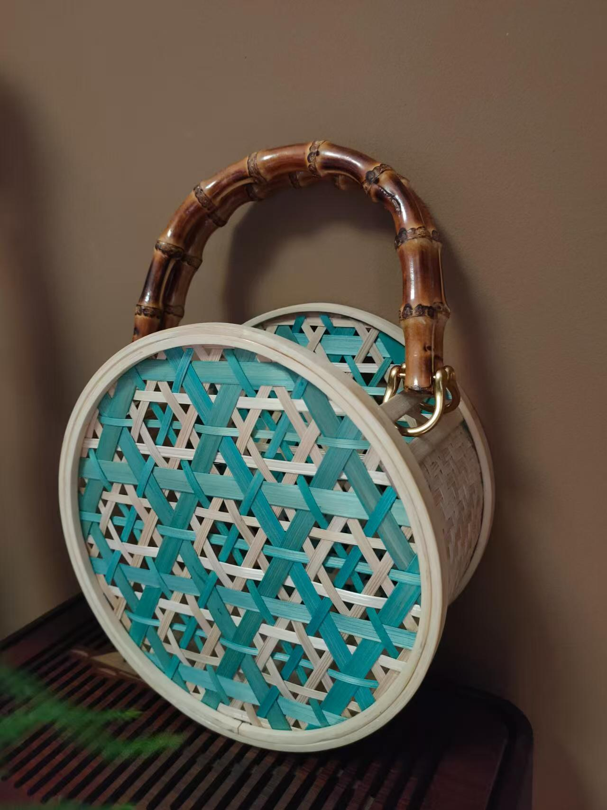

竹编包
在这个追求个性与环保的时代，竹编包凭借其独特的魅力，从传统手工艺的宝库中脱颖而出，成为时尚界与日常生活里备受瞩目的存在。它不仅是实用的生活物件，更是承载着千年文化底蕴的艺术结晶。
竹编包的制作，从选材便充满讲究。匠人们通常会选用质地坚韧、纤维细长的楠竹、毛竹。这些竹子在经过锯竹、剖竹、去节、分层等一系列繁琐工序后，被精心加工成粗细均匀的竹丝、竹篾，为编织奠定基础。编织过程中，挑、压、穿、插等手法轮番上阵，十字编、人字编、菱形编等技法巧妙运用，将原本普通的竹丝、竹篾交织成富有韵律的图案与造型。更有甚者，在编织完成后，还会结合雕刻、彩绘等工艺进行装饰，让竹编包从质朴走向精美。
竹编包的特点与优势，使其在众多包袋中独树一帜。竹子作为可再生资源，生长周期短，制作而成的竹编包天然环保，契合了现代人对绿色生活的向往。其独特的编织结构赋予了良好的透气性，能有效保持包内物品干燥，避免受潮发霉，实用性十足。而每一个竹编包，因手工编织的特性，都有着独一无二的纹理与质感，这种自然与匠心交融的美感，是工业化产品无法比拟的。
在日常生活中，竹编包的用途广泛。它是实用的购物伙伴，能轻松装下生活用品；是出行时携带随身物品的时尚选择，无论是手机、钱包，还是书本，都能妥善收纳。在家居装饰领域，竹编包同样能发挥作用，挂在墙上，或置于架子上，瞬间为空间增添自然气息与艺术氛围。在特殊场合，如浪漫的婚礼、充满怀旧氛围的复古派对，竹编包也能作为别具一格的装饰元素，营造出独特的氛围。更重要的是，竹编包承载着深厚的文化内涵，它是传统竹编工艺的重要载体，每一次使用与展示，都是对传统手工艺文化的传承与宣扬。
从历史深处走来的竹编包，在时代的浪潮中不断革新，将传统手工艺的精髓与现代时尚完美融合。它既是过去岁月里人们智慧的结晶，也是当下追求品质生活与文化传承的象征，相信在未来，竹编包还将以更丰富的姿态，继续书写属于自己的精彩篇章。